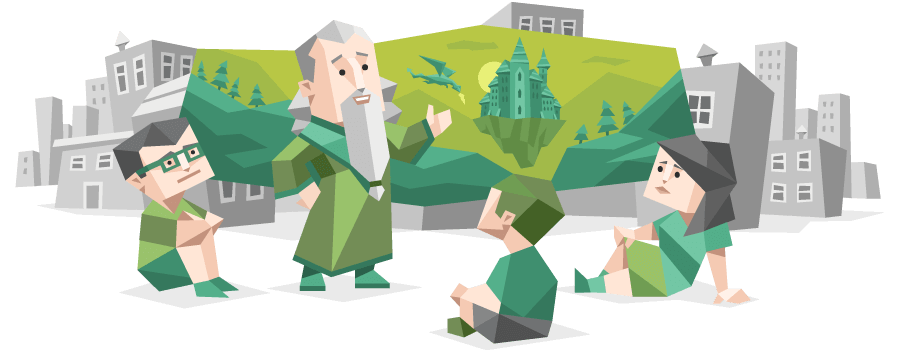

Matthew Robinson
- Student ID: 3893806
- E: s3893806@student.rmit.edu.au
- G: https://github.com/Secret-Penguin
My name is Matthew, but most people call me Matt.
I was born in Sydney and moved to New Zealand with my family in 1996 where I spent 18 years before returning to Australia in March 2014. I have lived in Melbourne for the last 7 years but have returned home often to visit my family and friends who remain in NZ.
This is my first time undertaking higher education at a university level and other than my high school leavers certificate the only other qualification I have obtained was a hospitality certificate in 2007. I have worked in government administration roles since around 2010 and have had extensive hands experience and in-house training at the organisations I have worked at gaining a broad knowledge of business practices and legislative knowledge.
I have travelled extensively around the globe spending a considerable amount of time in Asia and Europe. My favourite destination is a small island off the coast of Cambodia named Koh Rong, it is famous for its Bioluminescent Plankton and idyllic beaches. When I arrived on the island, I was only meant to stay for three days but feel in love with it on the first day and ended up spending a month floating in the crystal-clear sea and soaking up the sun before moving on.
I own a dog named Terry who is about to turn two years old and is a Kelpie crossed with a German Shorthaired pointer. Terry is a very energetic pup and has a big personality, he keeps me incredibly active and requires a lot of attention. To wear him out we need to go on long walks around the Yarra bend and surrounding parks, normally around 10kms each day, and I am constantly having to devise new games to keep his mind active. Terry has an amazing memory and can easily pick up new words within a short time frame making him the ideal pet to locate missing items around the house, however, he does expect plenty of treats in return for his efforts.
I grew up in a small country town in New Zealand were the only activities outside of rugby union and cricket was your imagination or if you were old enough the local pub. I, therefore, spent a lot of time fiddling around with the home computer and gaming consoles, many hours were spent whittling away time on each generation of the PlayStation and Xbox.
From this experience, I gained a quick appreciation and interest in all things IT because it opened a large world to me that was not otherwise available. A lot of my childhood was spent online chatting to friends on MSN and ICQ and surfing the web, inhaling as much information as my brain could absorb. I became the go too person in my family for IT-related issues, not because of my proficiency in IT but mostly because of their lack of understanding. This led me to become quite savvy in solving technical issues with our home computer and gaming consoles and learning a great deal about technology through trial and error. In the process, I was also introduced to common applications like word and excel giving me the foundations to utilise these types of applications later when starting my career.
My interest in IT, however, has piqued in the last two years spurred on by my employment in a new job, and subsequently, this has led me to take this course. For most of my career, I have worked within government agencies where I have been a regular go-to for minor technical issues among the staff and have always been able to pick up systems and applications with relative ease. When joining the Department of Jobs Precincts and Regions as a Business Support Officer in Jan 2019 I was given the task of preparing and issuing daily reports to the business and while conducting my duties I discovered that I could automate basic manual tasks related to these reports. Utilizing the Visual Basics for Applications language that comes built into excel I soon discovered I could build all manner of programs to automate daily repetitive activities, as well as heavily manipulate data. Because of this, I landed an ongoing position within the department as a payroll system administrator automating reporting processes and payroll activities.
Having started with no knowledge of programming I have now started to explore other languages and areas within IT that I have had no previous exposure to. Because of this, I have sought out a more formalized education with RMIT Which I have chosen as my education provider due to its large student base and known academic excellence in the IT industry. Being enrolled with a university also offers me opportunities to explore different teaching and learning styles, work on projects with different personality types and potential future colleagues in the industry, and most importantly gain a greater understanding of IT from many different angles and perspectives. I believe by undertaking this course and seeking to complete a bachelor of IT I will be able to gain exposure to areas of the industry I have not yet had the opportunity to explore and may find from these experiences new and exciting avenues within IT to pursue. However, my main learning objective is to broaden my understanding of database management and programming so that I can equip myself with more professional tools to succeed in my current role into the future and provide myself with the ability to progress into my ideal job which is covered in the next section.
My Ideal Job is
Manager, Payroll Systems and Workforce Reporting

The Manager of Payroll Systems and Workforce Reporting is a complex role that requires a comprehensive understanding of database and systems administration and how to implement procedures and processes collaboratively used by the team to provide the timely running of the pay for the department, and to maintain the accuracy and integrity of payroll and HR data contained within the system. This role requires someone who can think on their feet and can quickly analyse trends, extinguish threats and identify opportunities to explore all while managing the wider business expectations and objectives.
To be successful in this role I would need the ability to communicate and effectively manage a team, having exposure to people and project management and being able to build strong relationships with other stakeholders within the business. I would also need a comprehensive understanding database management, applying best practice, and identifying/implementing improvements to procedures and processes to maintain the integrity of data within the system. Another important skill would be the ability to query databases using programming languages such as SQL and Python and be able build effective reporting frameworks to provide accurate data to the business. And lastly Having an analytical mind and being able to determines threats and risks and opportunities to the business, while being able to communicate these to the team, leadership, and other internal stakeholders.
My current comprehensive understanding of the business, its structure and its objectives around reporting and data provision would be of great use in this role as I have a solid understanding of legislative requirements, enterprise bargaining agreements and public sector practices. I also have strong stakeholder management skills and have built strong relationships within the department and externally with our business partners. I would also be able to bring to the role my analytical mind and quickly disseminate patterns and trends within processes and data to easily determine risks and opportunities to the team and business.
To be a viable candidate for this role in the future I will develop my understanding of best practice when dealing with big data, database management, servers and Programming languages while pursuing and completing the core subjects of this bachelor and take other opportunities and short courses where necessary to gain further understanding of how to manage and query databases effectively and build customizations and configurations within the system. By taking a minor in Management I will be able to equip myself with management tools and develop my ability to manage by gaining an understanding people management practices and techniques. Overall, this development plan will make me more employable in this role.
Type: Assertive Advocate
Code: INFJ-A
Role: Diplomat
Strategy: Confident-Individualism
Creative – Advocate personalities enjoy finding the perfect solution for the people they care about. To do this, they draw on their vivid imagination and their strong sense of compassion. This can make them excellent counsellors and advisors.
Insightful – Advocates typically strive to move past appearances and get to the heart of things. This can give them an almost uncanny ability to understand people’s true motivations, feelings, and needs.
Altruistic – Advocates generally aim to use their strengths for the greater good – they rarely enjoy succeeding at other people’s expense. They tend to think about how their actions affect others, and their goal is to behave in a way that will help the people around them and make the world a better place.
Sensitive to Criticism – When someone challenges their principles or values, Advocates may react strongly. People with this personality type can become defensive in the face of criticism and conflict, particularly when it comes to issues that are near to their hearts.
Perfectionistic – The Advocate personality type is all but defined by idealism. While this is a wonderful quality in many ways, an ideal situation is not always possible. Advocates might find it difficult to appreciate their jobs, living situations, or relationships if they are continually fixating on imperfections and wondering whether they should be looking for something better.
Prone to Burnout – Advocates’ perfectionism and reserve may leave them with few options for letting off steam. People with this personality type can exhaust themselves if they do not find a way to balance their drive to help others with necessary self-care and rest.
[1]"Free personality test, type descriptions, relationship and career advice | 16Personalities", 16personalities.com, 2021. [Online]. Available: https://www.16personalities.com/. [Accessed: 12 - Mar- 2021]
Reflector style: Reflectors stand back and learn they tend to be cautious, preffering to take a back seat. They like to collect and analyse information to help them reach their conclusions
Learning methods that are best suited for a reflector include:
[2]"Learning Styles Quiz", Emtrain.eu, 2021. [Online]. Available: http://www.emtrain.eu/learning-styles/. [Accessed: 12 - Mar- 2021]
My top 5 Key Character strengths include:
Honesty – Speaking the truth but more broadly presenting oneself in a genuine way and acting in a sincere way; being without pretense; taking responsibility for one's feelings and actions.
Kindness – Doing favors and good deeds for others; helping them; taking care of them.
Love for Learning – Mastering new skills, topics, and bodies of knowledge, whether on one's own or formally; related to the strength of curiosity but goes beyond it to describe the tendency to add systematically to what one knows.
Creativity – Thinking of novel and productive ways to conceptualize and do things; includes artistic achievement but is not limited to it.
Bravery – Not shrinking from threat, challenge, difficulty, or pain; speaking up for what’s right even if there’s opposition; acting on convictions even if unpopular; includes physical bravery but is not limited to it.
[3]"VIA Character Strengths Survey & Character Profile Reports", Viacharacter.org, 2021. [Online]. Available:https://www.viacharacter.org/. [Accessed: 17- Mar- 2021]
This test should not be used to deduce every facet of my personality as each individuals background and experiences are different and cannot be easily reduced down to 16 personalities but the tests are a useful indicator of the types of traits that I have and show where my perceived strengths and weaknesses are which I can build on and be aware of when interacting with other individuals or working in a team the tests also put a spotlight on areas that I may need to improve on, for example, I am sensitive to criticism and a bit of a perfectionist but having an awareness of these traits can help me to recognize my behaviours when they arise and be prepared to come up with strategies to negate the negative effects and use the traits to my advantage turning them around to be a strength.
Having an awareness of what I am capable of well allow me to function as a better team member as I will be able to put my hand up for tasks and activities within the team that I can handle and that play to my strengths and while recognizing where other may be able to help when I don't have a particular skill in my tool kit, in addition, it may also help me identify people within the team that have opposing skills that can be used collaboratively to achieve a greater outcome for the team overall or allow me to understand/recognize when another team member is struggling and needs help within area of the assignment they may not have the skills or be comfortable doing. All the above can assist me when forming a team as I can take a step back when conflicts arise and think about approaching situations differently.
My idea consists of a subscription and payment manager app designed as a dashboard for all your subscriptions. The app would use a single email address to create accounts on behalf of the user and passwords would be generated and stored on the app for the user to log into each service, with the main feature being the ability to pay through the app for all connected services so that all subscriptions are bundled into one easy to manage payment fortnightly or monthly. The app would also contain a catalogue of all Movies/TV shows available on each video on demand service to provide a central location to make decisions on which service is need at any given time.
There is a proliferation of subscription services and video on demand subscriptions have exploded since the advent of Netflix. New services are becoming available each with different and varying content, cost, and payment dates. When managing multiple subscriptions, it can become impossible to keep track of which services you have signed up to and what date each payment is due resulting in being charged for services you no longer require or forgetting about some services all together. By having a single payment per month and a visible dashboard of all current subscriptions the user would be able to better manage their finances, determine which services they need, and what content is available.
Once the app has been downloaded the initial signup page will be displayed asking for information to create an account utilizing the same fields and details used by the subscription services, this would include name, phone number, address and email and password to use on the account. There would also be secure signup for the customer's credit card/debit card details and relevant terms and conditions that the user would need to agree to.
When set up and logged into the app the user will be presented with a dashboard that lists available subscription services through the app, the dashboard will display whether the service is active, and the price. If signing up for a service for the first time it will also display the applicable trial period and allow the user to provide login details for existing services which it will then log into and change the password and billing information. The dashboard would also contain a total for all services signed up to and the billing date and frequency. Swiping left or right will display the settings, Account details, and content database.
The content-database will be searchable displaying the relevant service attached to the content, selecting the service will open its pop-up page the service pop-up can be accessed from the dashboard also. The service pop up display will show details of the service, the available plans and an option to view the content catalogue, as well as signup to the service. If the user signs up for the service, the pop up will change to showing relevant details about billing dates, the password to access the service and an option to upgrade or cancel the service. It would also display an option to access the app downloaded or direct the user to the app store to download and install the application on their device.
The user would have the ability to set up push notifications with a default reminder of the billing date being sent out 7 days prior to allow the user enough time to cancel the service and adjust the apps next payment cycle accordingly. Payments would be made by adding credit to the app account which would determine billing cycles and payment dates and provide an amount to be credited based on the user's selected payment frequency, the use of digital credit cards with a one tie use updated on the users account on the day of payment would negate the risk to the business of the user being able to obtain the businesses credit card and banking information. To make the app commercially viable a service fee would be included with this amount each month of a few dollars to cover the cost of server hire, payment and banking charges and applicable taxes.
A secure encrypted server to store the user’s data (Email, passwords, contact information and service information, payment information and content catalogue) could be cloud-based to limit costs. Python for building a web scraping application to obtain the data needed to build the catalogue of service on-demand movies and tv shows. The utilisation of Java for developing the android app and Swift for developing the IOS app. A PayPal business account or banking account to hold customer payments and a secure payment provider such as SquareUp or SecurePay to take payment from the customer in the app.
To develop this app a user interface in both Java for android and swift for IOS would need to be designed, as well as a database to store or customer-based information that is collected at signup and catalogue data collected from the web for each service. The Web scrapper would require an understanding of Python but as most services provide online libraries of their content the scraper would only need to use these sites and not search the whole net. Sound knowledge of privacy requirements and other governing legislation would be needed as the app would handle the user’s private data and sensitive banking information.
The desired outcome of this app is to provide users with greater access and visibility over their subscription-based services and provide a one-stop-shop for all sign-ups, service management and billing. With the ability to view the catalogue for each of their subscribed videos on-demand services the user will be able to make informed decisions about the content they want to continue paying for. With all payments bundled into one transaction to be billed monthly or fortnightly the user will end up having more control over their budget and reduce unwanted billing that can add up if left unchecked.